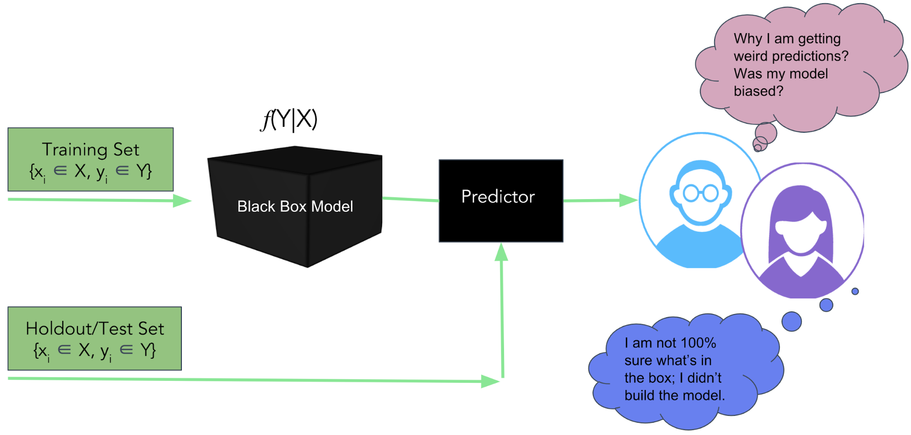

Criteria for Machine Learning Model Interpretation Methods
- Intrinsic or post hoc?
- Model-specific or model-agnostic?
- Local or Global?
- Feature Importance
- Partial Dependency
- Shap Value
- LIMEs Method
Model Construction Pipeline Review

Feature Importance
Xgboost supports feature importance by:
- Feature Weights
- Information Gain
- Coverage
Partial Dependency
- Partial Dependence describes the marginal impact of a feature on model prediction, holding other features in the model constant
- The derivative of partial dependence describes the impact of a feature (analogous to a feature coefficient in a regression model)
Shap Value
If we all collaborate, how do we divide the payoff?
- SHAP values try to explain the output of a model (function) as a sum of the effects of each feature being introduced into a conditional expectation.
- Proofs from game theory show this is the only possible consistent approach
- $$\phi_{ij}=\sum_{All\ Ordering} val(\{features.before.j\}\cup x_{ij})-val(\{features.before.j\})$$
LIMEs Method
Local Interpretable Model-Agnostic Explanations(LIME)
Now forget about the model, all we have is a black box which can do something magic.
- LIME is a novel algorithm to access the behavior of the any base estimator(model)
- Using interpretable surrogate models (e.g. linear classifier/regressor)
- Locally faithful but may not align with the global behavior
What LIME acctually did?
- LIME generates a new dataset consisting of perturbed samples and the associated black box model’s predictions
- On this dataset LIME then trains an interpretable model weighted by the proximity of the sampled instances to the instance of interest